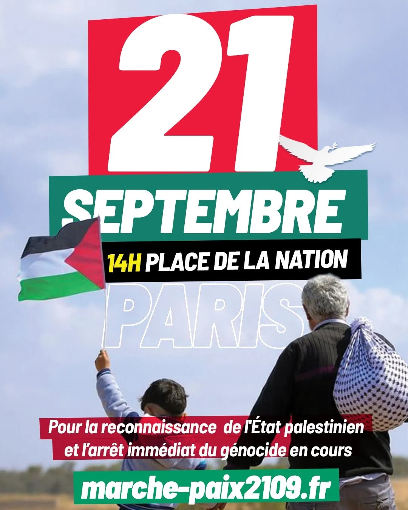

Appel national
Journée internationale de la paix. La marche du 21 septembre à Paris
Date de mise à jour indiquée par Facebook · 16 septembre 2025
Repères éditoriaux
Le PCF avait appelé à marcher pour la paix le 21 septembre 2025 à 14 h, place de la Nation à Paris. Il demandait la reconnaissance de l’État de Palestine et l’arrêt des violences contre sa population.
Texte de la publication · PCF national
21 septembre – Journée internationale de la paix
14h, Place de la Nation – https://marche-paix2109.fr/
Il est temps d’agir :
Reconnaissance immédiate de l’État de Palestine dans les frontières de 1967
Arrêt immédiat du génocide en cours
Cessez-le-feu et libération des prisonniers politiques palestiniens et des otages israéliens
Fin de la colonisation et de l’occupation
Embargo sur les armes et sanctions contre le gouvernement Netanyahou
Marchons pour la justice, la liberté et l’arrêt immédiat du génocide en cours.
Premiers signataires : Sophie Binet (CGT) • Caroline Chevé (FSU) • Olivier Faure (PS) • Fabien Roussel (PCF) • Marine Tondelier (Les Écologistes) • Nathalie Tehio (LDH) • Anne Tuaillon (AFPS) • Roland Nivet (Mouvement de la Paix) • Une autre voix juive • UJRE • MRAP • Collectif Golem …

Sources
PCF national · publication relayée par le PCF 79 · bibliothèque Facebook · AR-0002-FB-01011
À lire aussi · À Niort, des drapeaux palestiniens devant l’hôtel de ville le 22 septembre